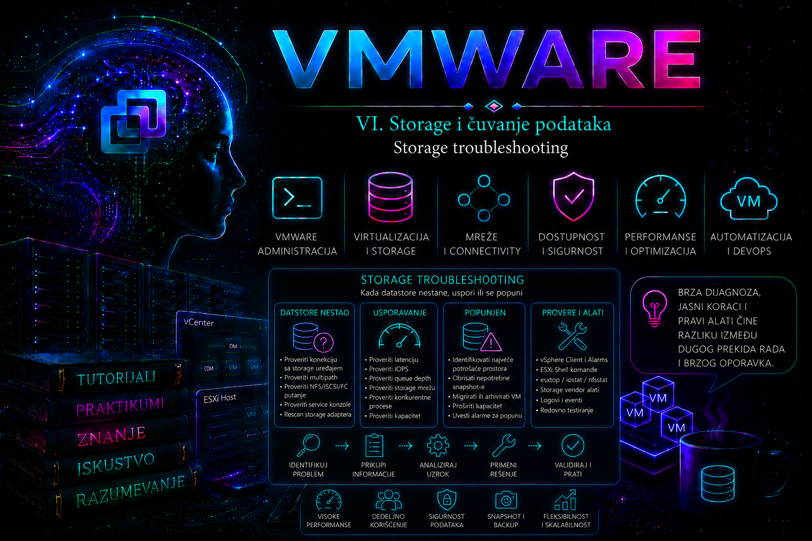

VMware

Storage problem u VMware infrastrukturi retko ostaje ograničen samo na disk. Kada ESXi host izgubi pristup datastore-u, posledice se mogu pojaviti kao zamrznuta virtuelna mašina, neuspešan snapshot, nemogućnost pokretanja VM-a, usporena aplikacija, nedostupna konfiguraciona datoteka, prekid migracije ili host koji veoma sporo odgovara na zahteve vCenter servera.
Zbog toga storage troubleshooting ne počinje nasumičnim rescan-om, restartovanjem servisa ili promenom multipathing politike. Najpre se utvrđuje opseg incidenta, zatim storage sloj u kojem se problem nalazi, a tek nakon toga se izvodi kontrolisana korektivna radnja.
Administrator mora da odgovori na nekoliko osnovnih pitanja:
- Da li je problem zahvatio jednu virtuelnu mašinu ili više njih?
- Da li je nedostupan jedan datastore ili svi datastore-i određenog tipa?
- Da li problem postoji na jednom ESXi hostu ili na celom klasteru?
- Da li je izgubljena jedna putanja ili sve putanje do uređaja?
- Da li je datastore nestao, postao nedostupan, usporio ili ostao bez prostora?
- Da li je uzrok na ESXi hostu, mreži, SAN fabric-u ili storage sistemu?
- Da li je neposredno pre incidenta izvedena neka promena?
Najvažniji cilj nije da datastore što pre ponovo izgleda zeleno u vCenter-u, već da se pristup podacima obnovi bez dodatnog rizika, da se sačuvaju tragovi incidenta i da se utvrdi stvarni osnovni uzrok.
Lekcija je operativno usmerena na savremena vSphere 8.x okruženja i proverena je i prema aktuelnim Broadcom ESXCLI i VCF PowerCLI referencama. Nazivi pojedinih polja, alarma i menija mogu se razlikovati između tačkastih izdanja i klijentskih interfejsa, dok osnovni dijagnostički model — datastore, fajl sistem, uređaj, putanja, adapter i transport — ostaje isti. Pre izmene driver-a, firmware-a, SATP/PSP politike ili naprednih parametara obavezno se proveravaju matrica kompatibilnosti, release notes konkretnog build-a i dokumentacija proizvođača storage sistema.
Najčešće kategorije storage problema
Problemi se u praksi mogu grupisati u nekoliko osnovnih kategorija:
- datastore je prikazan kao inaccessible ili unmounted;
- blokovski uređaj više nije vidljiv ESXi hostu;
- jedna ili više storage putanja su izgubljene;
- sve putanje do uređaja su izgubljene – APD;
- storage sistem je potvrdio trajni gubitak uređaja – PDL;
- NFS datastore više ne može da se montira ili koristi;
- iSCSI sesije ili target portali nisu dostupni;
- Fibre Channel LUN nije pravilno prezentovan;
- latencija je visoka i VM-ovi sporo izvršavaju diskovne operacije;
- datastore je skoro popunjen ili potpuno popunjen;
- snapshot datoteke nekontrolisano rastu;
- VMFS datastore nije vidljiv na svim hostovima;
- datastore postoji, ali virtuelne mašine postaju inaccessible ili Unknown.
Prvo pravilo – utvrditi opseg incidenta
Opseg problema često odmah usmerava dijagnostiku.
| Simptom | Verovatniji sloj problema |
|---|---|
| Jedna virtuelna mašina je spora | VMDK, guest OS, snapshot, pojedinačni workload ili VM konfiguracija |
| Sve VM na jednom datastore-u su spore | Datastore, LUN, NFS export, storage pool ili zajedničke putanje |
| Svi datastore-i na jednom hostu su problematični | HBA, NIC, VMkernel mreža, driver, firmware ili host konfiguracija |
| Isti datastore je nedostupan na svim hostovima | Storage sistem, target, LUN prezentacija, NFS server ili fabric |
| Datastore je nedostupan samo na jednom hostu | Lokalna putanja, adapter, VMkernel mreža, zoning ili host stanje |
| Svi hostovi vide samo polovinu putanja | Otkaz fabric-a, switch-a, storage kontrolera ili target portova |
| VM-ovi ne mogu da se uključe zbog nedostatka prostora | Popunjen datastore, snapshot rast, swap ili log datoteke |
Drugo pravilo – utvrditi šta ESXi još uvek vidi
Datastore, fajl sistem, storage uređaj, adapter i putanja nisu isti objekat. Datastore može biti nedostupan iako uređaj još postoji. Uređaj može biti vidljiv, ali VMFS nije montiran. Adapter može biti online, ali bez putanje do konkretnog LUN-a.
Zbog toga se provera izvodi od višeg prema nižem sloju:
- datastore i fajl sistem;
- VMFS extent ili NFS mount;
- storage uređaj;
- putanje do uređaja;
- storage adapter;
- mrežni ili SAN transport;
- storage target, kontroler i fizički medij.
Početni CLI pregled
# pregled datastore-a i montiranih fajl sistema
esxcli storage filesystem list
# pregled VMFS datastore-a i pripadajućih uređaja
esxcli storage vmfs extent list
# pregled blokovskih storage uređaja
esxcli storage core device list
# pregled storage adaptera
esxcli storage core adapter list
# pregled svih storage putanja
esxcli storage core path list
# pregled NMP uređaja i politika
esxcli storage nmp device list
# pregled NFS 3 datastore-a
esxcli storage nfs list
# pregled NFS 4.1 datastore-a
esxcli storage nfs41 list
# pregled iSCSI adaptera
esxcli iscsi adapter list
# pregled aktivnih iSCSI sesija
esxcli iscsi session list
# pregled Fibre Channel adaptera
esxcli storage san fc listIzlaz komandi treba sačuvati u incidentnoj dokumentaciji. Posebno su važni ime datastore-a, UUID, NAA identifikator uređaja, adapter, stanje putanja, politika izbora putanje i vreme kada je stanje zabeleženo.
Datastore je inaccessible
Status inaccessible znači da ESXi trenutno ne može da pristupi datastore-u. To ne znači automatski da su podaci obrisani ili da je fajl sistem oštećen. Uzrok može biti prekid mreže, gubitak svih putanja, uklonjena LUN prezentacija, NFS problem, administrativni unmount ili privremeno stanje storage kontrolera.
Prvo treba proveriti da li je datastore nedostupan na jednom ili na svim hostovima.
esxcli storage filesystem listZa VMFS datastore treba povezati ime datastore-a sa odgovarajućim uređajem:
esxcli storage vmfs extent listNakon što se utvrdi NAA identifikator, proveravaju se uređaj i putanje:
esxcli storage core device list \
--device naa.ID_UREĐAJAesxcli storage core path list \
--device naa.ID_UREĐAJAAko uređaj postoji, ali VMFS nije montiran, problem nije isti kao kada uređaj uopšte nije vidljiv. Ne treba odmah kreirati novi datastore na uređaju koji sadrži postojeće podatke. Takva operacija može dovesti do gubitka postojeće strukture.
Datastore je unmounted
Datastore može biti administrativno demontiran, ali uređaj i dalje može biti priključen hostu. Pre pokušaja ponovnog montiranja treba proveriti zbog čega je datastore demontiran i da li je u toku planirana procedura uklanjanja.
Pregled poznatih VMFS volumena može se izvršiti komandama:
esxcfg-volume -lesxcli storage filesystem listAko se pronađe postojeći VMFS volume koji nije montiran, mora se utvrditi da li je to originalni volume, snapshot ili replika sa promenjenim potpisom. Ne treba nasumično koristiti mount, resignature ili force opcije bez razumevanja porekla uređaja.
Storage rescan – kada pomaže, a kada ne
Rescan nalaže ESXi hostu da ponovo proveri storage adaptere i otkrije nove ili promenjene uređaje. Koristan je nakon:
- prezentovanja novog LUN-a;
- obnove storage putanje;
- ispravke zoning-a ili LUN masking-a;
- dodavanja iSCSI target portala;
- promene storage konfiguracije koju ESXi još nije otkrio.
esxcli storage core adapter rescan --allZa pojedinačni adapter:
esxcli storage core adapter rescan \
--adapter vmhba64Rescan ne popravlja neispravan kabl, pogrešan VLAN, uklonjenu LUN prezentaciju, nedostupan NFS server, neispravan storage kontroler ili pogrešno podešen MTU. Ako se uzrok ne otkloni, ponavljanje rescan-a samo proizvodi dodatne log poruke.
All Paths Down – APD
APD označava stanje u kojem ESXi nema nijednu dostupnu putanju do storage uređaja, ali nije dobio potvrdu da je uređaj trajno uklonjen. Host zato određeno vreme nastavlja da pokušava pristup i očekuje da se putanje možda oporave.
APD može nastati zbog:
- otkaza oba storage fabric-a;
- prekida svih iSCSI mrežnih putanja;
- nedostupnosti storage kontrolera;
- isključenja svih target portova;
- prekida NFS mreže ili rada NFS servera;
- pogrešne promene zoning-a ili LUN masking-a;
- pogrešnog VLAN-a, MTU-a ili IP konfiguracije;
- ARP konflikta ili duplirane IP adrese u storage mreži;
- fizičkog prekida kablova ili switch infrastrukture.
Tokom APD stanja VM-ovi mogu postati neodzivni, hostd i vpxa servisi mogu sporo odgovarati, a operacije u vCenter-u mogu dugo čekati zato što I/O zahtevi ne dobijaju odgovor.
U podrazumevanoj APD obradi ESXi najpre čeka da se putanja oporavi; u aktuelnim vSphere 8.x referencama podrazumevani APD timeout je 140 sekundi. To nije obećanje da će se workload posle 140 sekundi automatski oporaviti: dalji odgovor zavisi od vrste datastore-a, stanja VM-a i vSphere HA podešavanja za datastore sa APD-om. HA reakcija i dodatni „delay for failure response” predstavljaju zasebnu klastersku politiku, koja se obrađuje u lekciji 32; tokom ovog incidenta najvažnije je ne prikriti kvar restartovanjem management agenata pre prikupljanja dokaza.
Provera APD stanja
grep -Ei "APD|All Paths Down|NMP|naa\." \
/var/log/vmkernel.log |
tail -n 200esxcli storage core path listesxcli storage core device listKod APD incidenta rešava se uzrok na storage, mrežnom ili SAN sloju. Host ne može softverskim rescan-om da obnovi putanju koja fizički ili logički ne postoji.
Permanent Device Loss – PDL
PDL označava da je ESXi dobio nedvosmislen odgovor da storage uređaj više nije dostupan tom hostu. Tipičan primer je kada je LUN mapping uklonjen sa storage sistema bez prethodne kontrolisane procedure na ESXi hostovima.
PDL se razlikuje od APD-a:
- kod APD-a uređaj možda još postoji, ali nijedna putanja trenutno ne radi;
- kod PDL-a storage sloj potvrđuje da uređaj više nije dostupan hostu.
PDL može nastati zbog:
- uklanjanja LUN-a iz host ili initiator grupe;
- promene LUN masking-a;
- brisanja LUN-a na storage sistemu;
- neispravnog odgovora storage sistema;
- pogrešno izvedene dekomisije datastore-a;
- nekonzistentne prezentacije uređaja između hostova.
Provera PDL poruka
grep -Ei "PDL|Permanent Device Loss|PERM LOSS" \
/var/log/vmkernel.log |
tail -n 200Ne treba pokušavati da se PDL rešava kreiranjem novog datastore-a na uređaju ili nasumičnim restartovanjem servisa. Najpre se proverava storage prezentacija i utvrđuje da li je uređaj uklonjen namerno ili greškom.
APD i PDL – praktično poređenje
| Karakteristika | APD | PDL |
|---|---|---|
| Značenje | Nijedna putanja trenutno nije dostupna | Uređaj je potvrđeno trajno nedostupan |
| Da li uređaj možda još postoji? | Da | Storage ga više ne prezentuje hostu |
| Tipičan uzrok | Mreža, fabric, target ili kontroler | Uklonjen mapping ili LUN |
| Osnovna reakcija | Obnoviti storage putanju | Potvrditi nameru i prezentaciju uređaja |
| Rizik | Dugotrajno čekanje I/O operacija | VM i datastore ostaju bez uređaja |
Path redundancy degraded
Gubitak jedne storage putanje ne mora odmah prekinuti rad virtuelnih mašina. Ako druge putanje rade, I/O se nastavlja, ali infrastruktura više nema punu redundansu.
Takav alarm ne treba ignorisati zato što „sve još radi”. Sledeći kvar može ukloniti i poslednju dostupnu putanju.
esxcli storage core path list \
--device naa.ID_UREĐAJAesxcli storage nmp device list \
--device naa.ID_UREĐAJAPotrebno je utvrditi:
- koja putanja je izgubljena;
- koji adapter je koristi;
- koji target port je na drugoj strani;
- da li je pogođen jedan host ili ceo klaster;
- da li su nestale sve putanje kroz jedan fabric ili switch;
- da li preostale putanje imaju dovoljno kapaciteta;
- da li je promenjen odnos optimized i non-optimized putanja.
NFS datastore troubleshooting
Kod NFS-a ESXi zavisi od VMkernel mreže, IP dostupnosti NFS servera, export dozvola, verzije protokola i ispravnog identiteta udaljenog servera.
Posebno kod NFS 4.1 nije dovoljno pretpostaviti da će saobraćaj uvek koristiti VMkernel adapter koji administrator smatra „NFS adapterom”. Izbor izvorišne adrese zavisi od VMkernel TCP/IP steka i rutiranja; ako je server u drugoj mreži, zahtev može otići sa management adrese i biti odbijen export politikom. Zato se zajedno proveravaju ruta, stvarna izvorišna VMkernel adresa, dozvole na serveru i, kada je potrebno, paketni trag — ne samo uspešan ping.
Pregled NFS 3 datastore-a
esxcli storage nfs listPregled NFS 4.1 datastore-a
esxcli storage nfs41 listU izlazu treba proveriti:
- ime volumena;
- adresu ili ime NFS servera;
- export putanju;
- da li je datastore dostupan;
- da li je montiran;
- da li je read-only;
- koja verzija NFS protokola se koristi.
Provera VMkernel mreže
esxcli network ip interface listesxcli network ip interface ipv4 getesxcli network ip route ipv4 listTestiranje NFS servera sa odgovarajućeg VMkernel adaptera
vmkping -I vmk2 192.168.30.20Testiranje jumbo frame putanje
vmkping -I vmk2 -d -s 8972 192.168.30.20Ako običan test prolazi, a test sa velikim paketom i zabranjenom fragmentacijom ne prolazi, moguće je da MTU nije dosledno podešen na ESXi hostu, fizičkom switch-u ili storage uređaju.
Provera ESXi firewall pravila
esxcli network firewall ruleset list |
grep -i nfsProvera NFS log poruka
grep -Ei "NFS|SunRPC|mount|APD" \
/var/log/vmkernel.log |
tail -n 200Najčešći NFS uzroci su:
- NFS server nije dostupan;
- promenjena je IP adresa ili mrežna putanja;
- export putanja više ne postoji;
- ESXi VMkernel adresa nije dozvoljena u export pravilima;
- export je postao read-only;
- promenjen je backend storage iza iste NFS adrese;
- postoji duplirana IP adresa;
- MTU nije usklađen;
- DNS ime pokazuje na pogrešnu adresu;
- NFS 3 i NFS 4.1 konfiguracije nisu usklađene.
iSCSI troubleshooting
iSCSI problem može postojati na više nivoa: VMkernel mreža, physical NIC, VLAN, port binding, target discovery, CHAP autentifikacija, iSCSI sesija, LUN masking ili sam storage uređaj.
Pregled iSCSI adaptera
esxcli iscsi adapter listDetalji adaptera
esxcli iscsi adapter get \
--adapter vmhba64Pregled discovery portala
esxcli iscsi adapter discovery sendtarget list \
--adapter vmhba64Pregled iSCSI target-a
esxcli iscsi adapter target list \
--adapter vmhba64Pregled aktivnih sesija
esxcli iscsi session listPregled port binding-a
esxcli iscsi networkportal list \
--adapter vmhba64Testiranje target adresa
vmkping -I vmk2 192.168.40.20vmkping -I vmk3 192.168.41.20Pregled fizičkog mrežnog adaptera
esxcli network nic listesxcli network nic stats get \
--nic-name vmnic4Posebno treba obratiti pažnju na:
- receive i transmit errors;
- dropped pakete;
- link status i brzinu;
- pogrešan VLAN;
- MTU neusaglašenost;
- dupliranu IP adresu;
- MAC flapping ili ARP konflikt;
- neusklađen port binding;
- nepostojeću iSCSI sesiju;
- pogrešan CHAP podatak;
- LUN koji nije mapiran initiator-u.
Uspešan vmkping potvrđuje osnovnu IP dostupnost, ali ne dokazuje da TCP port 3260, iSCSI autentifikacija, target discovery i LUN masking rade ispravno.
Fibre Channel troubleshooting
Kod Fibre Channel-a putanja obuhvata HBA adapter, optički modul, kabl, FC switch port, zoning, storage target port, storage kontroler i LUN masking.
Pregled FC adaptera
esxcli storage san fc listTreba proveriti:
- WWPN i WWNN;
- link state;
- brzinu porta;
- da li je adapter prijavljen u fabric;
- da li oba HBA porta rade;
- da li adapteri vide očekivane uređaje.
Pregled FC statistike
esxcli storage san fc stats get \
--adapter vmhba2Pregled FC događaja
esxcli storage san fc events get \
--adapter vmhba2Pregled uređaja koje vidi adapter
esxcli storage core adapter device list \
--adapter vmhba2Ako je jedan FC adapter online, a drugi ne vidi uređaje, proveravaju se:
- HBA port i firmware;
- SFP modul i optički kabl;
- FC switch port;
- zoning za odgovarajući WWPN;
- storage host grupa;
- LUN masking;
- target port i storage kontroler.
Datastore je spor
Spor datastore se ne dijagnostikuje samo subjektivnim utiskom korisnika. Potrebno je meriti IOPS, throughput, queue vrednosti i latenciju na ESXi hostu, a zatim podatke uporediti sa storage sistemom i mrežnom ili SAN infrastrukturom.
Problem može biti:
- u virtuelnoj mašini ili guest operativnom sistemu;
- na VMDK nivou;
- u ESXi kernel redu čekanja;
- na HBA ili NIC adapteru;
- u FC ili Ethernet mreži;
- na storage target portu;
- u storage kontroleru, cache-u ili diskovima;
- u prevelikom broju paralelnih backup ili snapshot operacija;
- u preopterećenom datastore-u ili storage pool-u.
Storage latencija u esxtop alatu
esxtopNakon pokretanja:
- pritisnuti
uza storage device prikaz; - pritisnuti
dza storage adapter prikaz; - pritisnuti
vza prikaz virtuelnih diskova VM-ova.
Najvažnije kolone u device prikazu su:
- CMDS/s – broj I/O komandi u sekundi;
- READS/s – broj operacija čitanja u sekundi;
- WRITES/s – broj operacija pisanja u sekundi;
- MBREAD/s – količina pročitanih podataka;
- MBWRTN/s – količina upisanih podataka;
- DAVG/cmd – prosečna latencija uređaja i spoljne storage putanje;
- KAVG/cmd – prosečna latencija unutar ESXi kernel sloja;
- GAVG/cmd – ukupna latencija koju vidi guest;
- QAVG/cmd – vreme provedeno u redu čekanja.
Približno važi:
GAVG ≈ DAVG + KAVG
Visok DAVG češće usmerava analizu prema storage sistemu, target portu, mreži ili SAN fabric-u. Visok KAVG može ukazivati na queuing i zadržavanje zahteva u ESXi hostu. Visok GAVG pokazuje ukupno kašnjenje koje dobija virtuelna mašina.
Vrednosti ne treba tumačiti izolovano niti koristiti jednu univerzalnu granicu za sve aplikacije. Važno je poređenje sa:
- normalnim baznim stanjem;
- zahtevima aplikacije;
- merenjem na storage array-u;
- stanjem mrežnih ili FC portova;
- periodom kada se problem zaista pojavio.
Praćenje pojedinačnog VMDK-a
Kada je problem vezan za jednu virtuelnu mašinu, u alatu esxtop može se koristiti prikaz virtuelnih diskova:
- pokrenuti
esxtop; - pritisnuti
v; - pronaći GID virtuelne mašine;
- pritisnuti
e; - uneti GID radi filtriranja prikaza.
Time se proverava da li je latencija vezana za jedan VMDK, jednu virtuelnu mašinu ili širi storage problem.
Queue problemi
Storage uređaj može biti zdrav, ali I/O zahtevi mogu čekati zato što je queue zasićen. Queue dubina postoji na više nivoa:
- virtuelni SCSI kontroler;
- ESXi uređaj;
- HBA ili NIC adapter;
- storage target port;
- storage kontroler;
- fizički disk ili flash grupa.
Queue vrednosti ne treba menjati bez vendor preporuke. Povećavanje queue depth-a može samo premestiti problem na storage sistem i povećati latenciju za druge hostove.
Datastore je skoro popunjen
Popunjen datastore nije samo problem kapaciteta. Može sprečiti:
- uključivanje virtuelne mašine;
- kreiranje VM swap datoteke;
- rast snapshot delta datoteka;
- konsolidaciju snapshot-a;
- Storage vMotion operaciju;
- backup operacije;
- rast VM log datoteka;
- normalan rad thin provisioned VMDK-a.
Pregled kapaciteta datastore-a
esxcli storage filesystem listPregled preko PowerCLI-ja:
Get-Datastore |
Select-Object Name,
Type,
CapacityGB,
FreeSpaceGB,
@{
Name = "FreePercent"
Expression = {
[math]::Round(
($_.FreeSpaceGB / $_.CapacityGB) * 100,
2
)
}
}Najčešći potrošači prostora
- osnovni VMDK diskovi;
- snapshot delta datoteke;
- VM swap datoteke;
- memory snapshot datoteke;
- ISO slike;
- stari template-i i klonovi;
- napuštene VM datoteke;
- log datoteke;
- backup staging datoteke;
- neobrisane datoteke nakon neuspelih migracija;
- thin provisioned diskovi koji su porasli do punog kapaciteta.
Pregled velikih datoteka
Na ESXi hostu može se pregledati sadržaj konkretnog direktorijuma:
cd /vmfs/volumes/IME_DATASTOREA/IME_VM_DIREKTORIJUMAls -lhZa pregled zauzeća direktorijuma:
du -h -d 1 /vmfs/volumes/IME_DATASTOREAOve komande treba koristiti pažljivo na velikim datastore-ima. Rekurzivno pretraživanje velikog broja datoteka može stvoriti dodatno opterećenje.
Snapshot rast i popunjen datastore
Snapshot ne predstavlja potpunu kopiju virtuelne mašine. Nakon kreiranja snapshot-a novi upisi se usmeravaju u delta datoteke, koje mogu rasti dok ne dostignu značajan deo kapaciteta osnovnog diska.
Snapshot može postati veliki zbog:
- dugog perioda čuvanja;
- velikog broja upisa u VM;
- neuspelog backup procesa;
- prekinute konsolidacije;
- više uzastopnih snapshot-a;
- nedovoljnog slobodnog prostora za konsolidaciju.
Pregled snapshot-a preko PowerCLI-ja
Get-VM |
Get-Snapshot |
Select-Object VM,
Name,
Created,
SizeGB,
DescriptionPronalaženje starijih snapshot-a
Get-VM |
Get-Snapshot |
Where-Object {
$_.Created -lt (Get-Date).AddDays(-3)
} |
Select-Object VM,
Name,
Created,
SizeGB
Snapshot se ne uklanja ručnim brisanjem -delta.vmdk, -sesparse.vmdk ili drugih datoteka iz datastore-a. Uklanjanje i konsolidacija izvode se kroz vSphere mehanizme.
Thin provisioning i datastore kapacitet
Thin VMDK u početku zauzima manje fizičkog prostora od svog deklarisanog kapaciteta. Kako guest upisuje podatke, VMDK raste. Ako je zbir mogućeg rasta svih thin diskova veći od fizičkog kapaciteta datastore-a, postoji rizik od overcommit-a.
Administrator mora pratiti:
- trenutno zauzeće datastore-a;
- provisioned kapacitet VM-ova;
- brzinu rasta VMDK diskova;
- snapshot rast;
- slobodan prostor na storage pool-u;
- mogućnost proširenja LUN-a ili NFS volume-a.
VMFS datastore ne vidi isti kapacitet na svim hostovima
Nakon proširenja LUN-a storage sistem može prikazati novi kapacitet, ali pojedini hostovi još mogu videti staru veličinu. Potrebno je:
- potvrditi da je LUN proširen na storage sistemu;
- proveriti da je promena primenjena na sve host grupe;
- izvršiti rescan na svim relevantnim hostovima;
- proveriti novu veličinu uređaja;
- tek zatim proširiti VMFS datastore kroz podržani postupak.
esxcli storage core device list \
--device naa.ID_UREĐAJANe treba proširivati VMFS dok svi hostovi ne vide ispravan uređaj i očekivanu veličinu.
Virtuelna mašina je inaccessible ili Unknown
Ako ESXi ne može da pročita .vmx datoteku virtuelne mašine, vCenter može prikazati VM kao inaccessible ili Unknown. To često nije problem same VM registracije, već posledica nedostupnog datastore-a.
Pre uklanjanja VM-a iz inventory-ja treba proveriti:
- da li je datastore dostupan;
- da li postoji direktorijum VM-a;
- da li su
.vmxi VMDK datoteke čitljive; - da li drugi hostovi vide isti datastore;
- da li je u toku APD ili PDL stanje;
- da li je VM registrovan na hostu koji je izgubio pristup.
Važne log datoteke
| Log | Najvažnija namena |
|---|---|
/var/log/vmkernel.log |
Storage putanje, adapteri, SCSI greške, APD, PDL, NFS i latencija |
/var/log/vobd.log |
Storage i hardverska upozorenja i observations |
/var/log/hostd.log |
Host management operacije i datastore zadaci |
/var/log/vpxa.log |
Komunikacija hosta sa vCenter serverom |
/var/log/fdm.log |
vSphere HA i datastore heartbeat događaji |
vmware.log u VM direktorijumu |
Problemi konkretne virtuelne mašine i virtuelnih diskova |
Efikasna pretraga logova
grep -Ei "APD|PDL|NFS|iSCSI|naa\.|vmhba|I/O error|latency" \
/var/log/vmkernel.log |
tail -n 200Za praćenje novih događaja u realnom vremenu:
tail -f /var/log/vmkernel.logLogove treba povezati sa tačnim vremenom incidenta. Vreme na ESXi hostovima, vCenter serveru, storage sistemu i mrežnim uređajima mora biti sinhronizovano kako bi se događaji mogli pravilno uporediti.
Šta ne treba raditi tokom storage incidenta
- Ne kreirati novi datastore na uređaju koji možda sadrži postojeći VMFS.
- Ne formatirati LUN zato što je datastore trenutno nevidljiv.
- Ne menjati PSP politiku nasumično.
- Ne uklanjati VM iz inventory-ja pre provere datastore-a.
- Ne brisati snapshot delta datoteke ručno.
- Ne restartovati sve hostove istovremeno.
- Ne izvoditi masovni rescan bez procene uticaja.
- Ne uklanjati LUN sa storage sistema pre unmount i detach postupka.
- Ne pretpostavljati da je storage zdrav samo zato što jedna putanja radi.
- Ne menjati driver, firmware ili queue depth tokom aktivnog incidenta bez plana.
- Ne ignorisati datastore alarm samo zato što virtuelne mašine još rade.
Praktikum – početno evidentiranje stanja
Pre bilo kakve korektivne radnje treba zabeležiti početno stanje. Cilj je da administrator može da odgovori šta je bilo vidljivo pre promene, šta se promenilo i da li je oporavak zaista potpun.
Topologija, preduslovi i granice rizika
- jedan vCenter Server i najmanje dva ESXi hosta, kako bi se stanje pogođenog hosta moglo uporediti sa zdravim hostom;
- jedan zajednički VMFS ili NFS datastore i najmanje jedna nekritična laboratorijska virtuelna mašina;
- nalog sa read-only privilegijama za početno prikupljanje podataka, a administratorski nalog samo za unapred odobrene korektivne radnje;
- ESXi Shell ili SSH uključen samo tokom kontrolisanog prozora, uz evidentiranje pristupa i ponovno isključivanje ako ga bezbednosna politika ne zahteva trajno;
- VCF PowerCLI radna stanica povezana sa vCenter Serverom za poređenje hostova i kapaciteta;
- sinhronizovano vreme na hostovima, vCenter-u, mrežnim uređajima i storage sistemu.
Read-only komande u ovom praktikumu mogu se bezbedno izvršavati u produkciji uz uobičajenu kontrolu pristupa. Rescan menja stanje otkrivanja uređaja i izvodi se tek kada je osnovni transportni ili prezentacioni uzrok otklonjen. Prekid putanje, uklanjanje LUN mapping-a, gašenje NFS servisa, resignature, detach i ručno brisanje datoteka nisu dozvoljene produkcione simulacije. U laboratoriji se degraded-path stanje bezbednije demonstrira administrativnim isključivanjem samo jedne redundantne test putanje, uz potvrđenu drugu putanju i unapred definisan rollback.
Kriterijum početnog stanja
Pre simulacije moraju biti zabeleženi naziv i UUID datastore-a, NAA identifikator ili NFS server/export, očekivani broj putanja, SATP/PSP, adapteri, slobodan prostor i početne vrednosti latencije. Laboratorija se smatra vraćenom u početno stanje tek kada se svi ti podaci ponovo podudaraju, nema novih APD/PDL događaja, a testna VM uspešno čita i upisuje podatke.
Korak 1 – evidentirati datastore-e
esxcli storage filesystem listKorak 2 – povezati VMFS datastore-e sa uređajima
esxcli storage vmfs extent listKorak 3 – evidentirati uređaje
esxcli storage core device listKorak 4 – evidentirati putanje
esxcli storage core path listKorak 5 – proveriti multipathing politiku
esxcli storage nmp device listKorak 6 – evidentirati adaptere
esxcli storage core adapter listKorak 7 – sačuvati relevantne logove
cp /var/log/vmkernel.log \
/tmp/vmkernel-storage-incident.logcp /var/log/vobd.log \
/tmp/vobd-storage-incident.logU produkciji treba koristiti zvanični support bundle i centralizovano čuvanje logova, ali lokalne kopije mogu pomoći da se sačuva neposredni trag događaja.
Scenario 1 – datastore je nedostupan samo na jednom hostu
U klasteru sa četiri ESXi hosta isti VMFS datastore radi na tri hosta, dok je na četvrtom prikazan kao inaccessible.
Zaključak iz opsega problema
Pošto storage radi na ostalim hostovima, verovatnije je da je problem vezan za pogođeni host, njegov adapter, mrežnu ili FC putanju, zoning, port binding ili lokalno stanje uređaja.
Korak 1 – proveriti datastore i uređaj
esxcli storage filesystem listesxcli storage vmfs extent listKorak 2 – proveriti putanje uređaja
esxcli storage core path list \
--device naa.ID_UREĐAJAKorak 3 – uporediti sa zdravim hostom
Iste komande treba izvršiti na jednom zdravom hostu i uporediti:
- broj putanja;
- stanje putanja;
- adaptere;
- target portove;
- SATP i PSP politiku;
- veličinu uređaja;
- NAA identifikator.
Korak 4 – proveriti adapter
Za iSCSI:
esxcli iscsi session listesxcli iscsi networkportal list \
--adapter vmhba64Za Fibre Channel:
esxcli storage san fc listesxcli storage core adapter device list \
--adapter vmhba2Korak 5 – pregledati log
grep -Ei "APD|PDL|naa\.|vmhba|NMP" \
/var/log/vmkernel.log |
tail -n 200Korak 6 – nakon otklanjanja uzroka izvršiti rescan
esxcli storage core adapter rescan --allPotvrda oporavka
- datastore je ponovo mounted i accessible;
- uređaj ima očekivanu veličinu;
- vraćen je očekivani broj putanja;
- nema novih APD ili PDL poruka;
- VM-ovi normalno izvršavaju I/O operacije.
Scenario 2 – datastore je nedostupan na svim hostovima
Svi hostovi u klasteru istovremeno gube pristup istom datastore-u.
Zaključak iz opsega problema
Kada isti datastore nestane sa svih hostova, verovatniji uzrok je na zajedničkom sloju:
- storage kontroler;
- LUN prezentacija;
- NFS server ili export;
- target portovi;
- zajednički switch ili fabric;
- planirana ili pogrešna storage promena.
Korak 1 – proveriti da li postoji uređaj
esxcli storage core device listKorak 2 – proveriti putanje
esxcli storage core path list \
--device naa.ID_UREĐAJAKorak 3 – proveriti APD i PDL događaje
grep -Ei "APD|PDL|PERM LOSS|All Paths Down" \
/var/log/vmkernel.log |
tail -n 200Korak 4 – proveriti storage tim i promene
Potrebno je potvrditi:
- da li je LUN i dalje aktivan;
- da li je host grupa promenjena;
- da li je NFS export aktivan;
- da li je storage kontroler u failover-u;
- da li je izvršeno održavanje;
- da li su target portovi online;
- da li je došlo do prekida fabric-a ili mreže.
Korak 5 – obnoviti zajednički uzrok
Tek nakon obnove storage, mrežnog ili SAN sloja izvršava se rescan na pogođenim hostovima.
esxcli storage core adapter rescan --allVažna mera opreza
Ne treba istovremeno restartovati sve hostove klastera. Oporavak se izvodi kontrolisano, uz potvrdu stanja storage-a i očuvanje kapaciteta za preostale workload-e.
Scenario 3 – NFS datastore je inaccessible
NFS datastore je vidljiv u inventory-ju, ali nije dostupan. Drugi datastore-i rade normalno.
Korak 1 – proveriti mount stanje
esxcli storage nfs listZa NFS 4.1:
esxcli storage nfs41 listKorak 2 – proveriti VMkernel adresu i routing
esxcli network ip interface ipv4 getesxcli network ip route ipv4 listKorak 3 – testirati NFS server
vmkping -I vmk2 192.168.30.20Korak 4 – proveriti MTU
vmkping -I vmk2 -d -s 8972 192.168.30.20Korak 5 – pregledati mrežni adapter
esxcli network nic stats get \
--nic-name vmnic4Korak 6 – pregledati log
grep -Ei "NFS|SunRPC|APD|mount" \
/var/log/vmkernel.log |
tail -n 200Korak 7 – proveriti storage stranu
- NFS servis je pokrenut.
- Export putanja postoji.
- ESXi VMkernel subnet ima read/write pristup.
- NFS server nije promenjen iza iste IP adrese bez odgovarajuće procedure.
- Nema duplirane IP adrese.
- Storage mrežni interfejsi su online.
- Odgovarajuća verzija NFS protokola je omogućena.
Potvrda oporavka
esxcli storage nfs listesxcli storage filesystem listNakon obnove pristupa proveravaju se virtuelne mašine koje koriste datastore, jer neke mogu ostati u stanju koje zahteva dodatnu proveru ili registraciju.
Scenario 4 – iSCSI target odgovara na ping, ali LUN nije vidljiv
VMkernel adapter može da ping-uje iSCSI target, ali ESXi ne prikazuje očekivani uređaj.
Korak 1 – proveriti adapter
esxcli iscsi adapter listKorak 2 – proveriti discovery portal
esxcli iscsi adapter discovery sendtarget list \
--adapter vmhba64Korak 3 – proveriti target
esxcli iscsi adapter target list \
--adapter vmhba64Korak 4 – proveriti sesije
esxcli iscsi session listAko nema sesije, proveravaju se:
- TCP port 3260;
- CHAP podaci;
- target servis;
- port binding;
- VLAN i routing;
- duplirana IP ili ARP problem.
Ako sesija postoji, ali LUN nije vidljiv, proveravaju se:
- initiator IQN;
- storage host grupa;
- LUN masking;
- mapiranje LUN-a kroz odgovarajući target;
- pristup preko oba storage kontrolera.
Korak 5 – izvršiti kontrolisani rescan
esxcli storage core adapter rescan \
--adapter vmhba64Korak 6 – proveriti uređaje
esxcli storage core adapter device list \
--adapter vmhba64Korak 7 – proveriti putanje
esxcli storage core path listScenario 5 – Fibre Channel LUN ima samo jednu putanju
LUN je dostupan, ali ESXi prikazuje samo jednu putanju umesto očekivanih četiri.
Korak 1 – proveriti HBA adaptere
esxcli storage san fc listKorak 2 – proveriti uređaje po adapteru
esxcli storage core adapter device list \
--adapter vmhba2esxcli storage core adapter device list \
--adapter vmhba3Korak 3 – proveriti putanje konkretnog LUN-a
esxcli storage core path list \
--device naa.ID_UREĐAJAKorak 4 – proveriti FC statistiku
esxcli storage san fc stats get \
--adapter vmhba2esxcli storage san fc stats get \
--adapter vmhba3Korak 5 – proveriti SAN sloj
- Da li su oba HBA WWPN-a pravilno zonirana?
- Da li oba fabric-a rade?
- Da li su storage target portovi online?
- Da li su oba initiator-a u storage host grupi?
- Da li je LUN mapiran kroz oba kontrolera?
- Da li FC switch prijavljuje port greške?
Korak 6 – nakon ispravke izvršiti rescan
esxcli storage core adapter rescan \
--adapter vmhba2esxcli storage core adapter rescan \
--adapter vmhba3Potvrda oporavka
Potrebno je potvrditi ne samo broj putanja već i da one prolaze kroz očekivane nezavisne fabric-e, HBA adaptere, target portove i storage kontrolere.
Scenario 6 – virtuelne mašine su spore, ali CPU i memorija nisu opterećeni
Korisnici prijavljuju spor rad aplikacije. CPU ready, potrošnja memorije i mreža ne pokazuju ozbiljno zagušenje.
Korak 1 – pokrenuti esxtop
esxtop
Pritisnuti u i pratiti:
DAVG/cmd;KAVG/cmd;GAVG/cmd;QAVG/cmd;CMDS/s;READS/siWRITES/s.
Korak 2 – izolovati VM ili VMDK
U alatu esxtop pritisnuti v, pronaći VM i filtrirati njen GID.
Korak 3 – proveriti putanje
esxcli storage core path list \
--device naa.ID_UREĐAJAKorak 4 – proveriti mrežne greške za NFS ili iSCSI
esxcli network nic stats get \
--nic-name vmnic4Korak 5 – proveriti storage log
grep -Ei "latency|performance has deteriorated|I/O|naa\." \
/var/log/vmkernel.log |
tail -n 200Korak 6 – uporediti sa storage sistemom
Za isti vremenski interval treba prikupiti:
- storage controller latency;
- disk ili flash pool latency;
- cache stanje;
- target port throughput;
- queue depth i outstanding I/O;
- eventualni controller failover;
- rebuild, deduplication, replication ili backup aktivnosti.
Tumačenje
- Visok DAVG i visoka array latencija upućuju na storage sistem.
- Visok DAVG, ali niska array latencija, upućuju na mrežu ili SAN putanju.
- Visok KAVG upućuje na queuing ili ESXi kernel sloj.
- Problem samo na jednom VMDK-u može biti vezan za VM workload ili virtuelni kontroler.
- Problem na svim uređajima jednog adaptera može biti vezan za HBA, NIC ili driver.
Scenario 7 – datastore je popunjen zbog snapshot-a
Datastore je dostigao kritičan nivo, a pregled pokazuje velike snapshot delta datoteke.
Korak 1 – proveriti slobodan prostor
esxcli storage filesystem listKorak 2 – pregledati snapshot-e
Get-VM |
Get-Snapshot |
Select-Object VM,
Name,
Created,
SizeGBKorak 3 – identifikovati razlog snapshot-a
- Da li snapshot pripada aktivnom backup poslu?
- Da li je backup posao završen ili neuspešan?
- Da li vCenter prikazuje potrebu za konsolidacijom?
- Da li postoji dovoljno prostora za uklanjanje snapshot-a?
- Da li postoji više povezanih delta diskova?
Korak 4 – obezbediti prostor pre konsolidacije
Moguće bezbedne mere, u zavisnosti od okruženja, uključuju:
- migraciju druge VM na drugi datastore;
- uklanjanje nepotrebnih ISO datoteka;
- proširenje datastore-a;
- proširenje underlying LUN-a ili NFS volume-a;
- zaustavljanje dodatnih snapshot i backup poslova;
- Storage vMotion VM-a kada postoji dovoljno odredišnog kapaciteta.
Korak 5 – ukloniti snapshot kroz vSphere
Snapshot datoteke se ne brišu ručno. Uklanjanje se izvodi kroz Snapshot Manager, PowerCLI ili odgovarajući vSphere API postupak.
Korak 6 – pratiti prostor i latenciju
Konsolidacija može generisati značajan I/O. Tokom operacije treba pratiti:
- slobodan prostor;
- storage latenciju;
- rast ili smanjenje delta datoteka;
- vCenter zadatak;
- VM i host logove.
Scenario 8 – datastore je potpuno popunjen
Datastore više nema raspoloživ prostor, pojedine VM su pauzirane ili ne mogu da izvršavaju upis.
Prvi cilj – zaustaviti dalji rast
- zaustaviti nove snapshot operacije;
- pauzirati backup poslove koji stvaraju snapshot-e;
- zaustaviti nepotrebno kreiranje VM-ova i klonova;
- utvrditi koji VM ili proces najbrže troši prostor.
Drugi cilj – bezbedno osloboditi ili dodati kapacitet
Prioritet imaju mere koje ne ugrožavaju VM datoteke:
- proširenje datastore-a kada storage to podržava;
- migracija manje kritičnih VM-ova;
- uklanjanje nepotrebnih ISO slika;
- uklanjanje starih, potvrđeno nepotrebnih datoteka;
- kontrolisana konsolidacija snapshot-a nakon obezbeđivanja prostora.
Šta ne raditi
- ne brisati nasumične VMDK datoteke;
- ne brisati delta diskove;
- ne uklanjati VM direktorijum;
- ne pretpostavljati da je velika datoteka nepotrebna;
- ne pokretati više konsolidacija paralelno bez procene opterećenja.
Scenario 9 – VMFS datastore se ne pojavljuje nakon rescan-a
ESXi vidi uređaj, ali postojeći VMFS datastore nije automatski montiran.
Korak 1 – potvrditi uređaj
esxcli storage core device list \
--device naa.ID_UREĐAJAKorak 2 – pregledati VMFS extent-e
esxcli storage vmfs extent listKorak 3 – pregledati nemontirane VMFS volumene
esxcfg-volume -lKorak 4 – utvrditi poreklo uređaja
Potrebno je proveriti da li je uređaj:
- originalni produkcioni LUN;
- storage snapshot;
- replika drugog VMFS datastore-a;
- disaster recovery kopija;
- LUN sa promenjenim identitetom;
- uređaj koji je već montiran na drugom mestu.
Mount i resignature imaju različite posledice. Odluka se donosi tek nakon potvrde porekla uređaja i namene kopije.
Scenario 10 – datastore je uklonjen bez pravilne procedure
Storage administrator je uklonio LUN mapping pre nego što je datastore demontiran i uređaj detached sa ESXi hostova.
Mogući simptomi
- PDL poruke;
- inaccessible datastore;
- spor hostd ili vCenter rad;
- virtuelne mašine označene kao inaccessible;
- stari uređaj ostaje u host konfiguraciji;
- problemi tokom rescan-a.
Postupak
- Utvrditi da li je uklanjanje bilo namerno.
- Proveriti da li na datastore-u postoje potrebne VM ili druge datoteke.
- Ako je uklanjanje bilo greška, obnoviti LUN prezentaciju sa istim identitetom.
- Ako je uklanjanje bilo namerno, očistiti zavisnosti prema podržanoj proceduri.
- Proveriti datastore heartbeat, ISO veze i registrovane VM-ove.
- Izvršiti kontrolisani rescan.
- Proveriti da li su stari uređaji i reference uklonjeni.
Bezbedna procedura uklanjanja VMFS datastore-a
- Identifikovati sve VM-ove i datoteke na datastore-u.
- Migrirati ili ugasiti zavisne virtuelne mašine.
- Odvojiti ISO slike povezane sa VM-ovima.
- Proveriti template-e, swap datoteke i dump lokacije.
- Proveriti vSphere HA datastore heartbeat konfiguraciju.
- Proveriti Storage DRS i datastore cluster članstvo.
- Demontirati datastore sa svih hostova.
- Detach-ovati uređaj sa svih hostova kada je primenljivo.
- Tek zatim ukloniti LUN mapping ili storage objekat.
- Izvršiti rescan i potvrditi uklanjanje.
- Ažurirati dokumentaciju i monitoring.
PowerCLI pregled datastore kapaciteta
Get-Datastore |
Sort-Object FreeSpaceGB |
Select-Object Name,
Type,
CapacityGB,
FreeSpaceGB,
@{
Name = "UsedPercent"
Expression = {
[math]::Round(
(1 - ($_.FreeSpaceGB / $_.CapacityGB)) * 100,
2
)
}
}Pronalaženje datastore-a sa manje od 15% slobodnog prostora
Get-Datastore |
Where-Object {
($_.FreeSpaceGB / $_.CapacityGB) -lt 0.15
} |
Select-Object Name,
CapacityGB,
FreeSpaceGB,
@{
Name = "FreePercent"
Expression = {
[math]::Round(
($_.FreeSpaceGB / $_.CapacityGB) * 100,
2
)
}
}Pregled datastore-a po ESXi hostovima
Get-Cluster -Name "PROD-CLUSTER" |
Get-VMHost |
ForEach-Object {
$VMHost = $_
Get-Datastore -VMHost $VMHost |
Select-Object @{
Name = "VMHost"
Expression = { $VMHost.Name }
},
Name,
Type,
CapacityGB,
FreeSpaceGB
}Poređenje storage uređaja i multipathing politika
Get-Cluster -Name "PROD-CLUSTER" |
Get-VMHost |
ForEach-Object {
$VMHost = $_
Get-ScsiLun -VMHost $VMHost -LunType disk |
Select-Object @{
Name = "VMHost"
Expression = { $VMHost.Name }
},
CanonicalName,
Vendor,
Model,
CapacityGB,
MultipathPolicy,
OperationalState
}Pregled storage putanja kroz PowerCLI
Get-Cluster -Name "PROD-CLUSTER" |
Get-VMHost |
ForEach-Object {
$VMHost = $_
Get-ScsiLun -VMHost $VMHost -LunType disk |
Get-ScsiLunPath |
Select-Object @{
Name = "VMHost"
Expression = { $VMHost.Name }
},
Name,
State,
SanId,
ScsiLun
}Operativna procedura za visoku latenciju
- Zabeležiti tačno vreme problema.
- Utvrditi pogođene VM-ove, hostove i datastore-e.
- Prikupiti
esxtoppodatke. - Utvrditi DAVG, KAVG, GAVG i QAVG.
- Proveriti storage putanje.
- Proveriti adapter greške.
- Proveriti mrežne ili FC switch portove.
- Prikupiti array statistiku za isti period.
- Proveriti backup, snapshot, replikaciju i maintenance procese.
- Uporediti stanje sa normalnim baznim vrednostima.
- Otkloniti uzrok na odgovarajućem sloju.
- Ponoviti merenje nakon korekcije.
Operativna procedura za gubitak putanje
- Utvrditi koji uređaj i datastore su pogođeni.
- Utvrditi broj preostalih aktivnih putanja.
- Proveriti da li je problem na jednom ili svim hostovima.
- Identifikovati adapter, fabric, switch i target port.
- Proveriti da li preostala putanja ima dovoljno kapaciteta.
- Otkloniti fizički ili konfiguracioni uzrok.
- Izvršiti rescan tek nakon korekcije.
- Potvrditi vraćanje svih očekivanih putanja.
- Proveriti latenciju nakon oporavka.
- Zabeležiti osnovni uzrok i preventivnu meru.
Operativna procedura za datastore sa malo prostora
- Potvrditi trenutni slobodan prostor.
- Utvrditi brzinu trošenja prostora.
- Identifikovati najveće potrošače.
- Proveriti snapshot-e i backup poslove.
- Zaustaviti nepotrebno dodatno zauzeće.
- Obezbediti novi kapacitet ili migrirati workload.
- Kontrolisano ukloniti nepotrebne podatke.
- Potvrditi da su VM-ovi stabilni.
- Podesiti ili korigovati alarme.
- Dokumentovati razlog zbog kog alarm nije ranije sprečio incident.
Administratorske prakse
- Za svaki produkcioni datastore dokumentovati naziv, UUID, NAA identifikator, protokol, kapacitet, namenu i pripadajući storage pool.
- Dokumentovati mapiranje između ESXi hostova, HBA ili IQN identiteta, target portova i LUN-ova.
- Redovno proveravati da svi hostovi u klasteru vide isti broj očekivanih putanja.
- Ne čekati potpuni gubitak datastore-a da bi se reagovalo na degraded path alarm.
- Održavati bazne vrednosti IOPS-a, throughput-a i latencije za normalne periode rada.
- Sinhronizovati vreme na ESXi hostovima, vCenter serveru, switch-evima i storage sistemu.
- Slati ESXi, vCenter, SAN i storage logove u centralizovani sistem za nadzor.
- Postaviti alarme za slobodan prostor pre kritičnog nivoa, a ne tek kada datastore postane skoro potpuno popunjen.
- Posebno pratiti datastore-e sa thin provisioned diskovima i čestim snapshot operacijama.
- Snapshot koristiti kratkotrajno i uklanjati ga nakon završetka planirane operacije.
- Redovno proveravati snapshot-e koje su ostavili neuspešni backup poslovi.
- Ne tretirati storage snapshot kao jedini backup podataka.
- Pre rescan-a proveriti da li je uzrok problema zaista otklonjen.
- Pre promene PSP, SATP, queue depth-a, driver-a ili firmware-a proveriti Broadcom Compatibility Guide i preporuku proizvođača.
- Firmware HBA ili NIC adaptera i odgovarajući driver posmatrati kao kompatibilan par.
- Jumbo frame koristiti samo kada je MTU usklađen i testiran duž cele storage putanje.
- Za iSCSI i NFS koristiti namensku ili odgovarajuće izolovanu storage mrežu.
- Za Fibre Channel koristiti redundantne fabric-e bez zajedničke tačke otkaza.
- Pre uklanjanja LUN-a izvršiti potpun unmount i detach postupak na svim hostovima.
- Ne izvoditi istovremene storage promene na svim hostovima bez pilot provere na jednom kontrolisanom sistemu.
- Tokom incidenta čuvati početne logove i izlaze komandi pre restartovanja servisa ili hosta.
- Posle oporavka proveriti ne samo dostupnost datastore-a već i putanje, performanse i stanje virtuelnih mašina.
- Za svaku veću storage promenu imati plan vraćanja i jasno definisane kriterijume uspeha.
Kontrolna lista – datastore je nestao
- Utvrđen je opseg incidenta.
- Provereno je stanje na drugim hostovima.
- Datastore je povezan sa NFS export-om ili NAA uređajem.
- Proveren je storage adapter.
- Proverene su sve putanje.
- Provereni su APD i PDL događaji.
- Proverene su mrežne ili FC veze.
- Proverena je storage prezentacija.
- Sačuvani su logovi.
- Uzrok je otklonjen pre rescan-a.
- Potvrđen je povratak svih putanja.
- Proveren je rad virtuelnih mašina.
Kontrolna lista – datastore je spor
- Zabeleženo je tačno vreme problema.
- Utvrđeno je da li je pogođena jedna VM ili više njih.
- Prikupljene su DAVG, KAVG, GAVG i QAVG vrednosti.
- Proverene su putanje i multipathing politika.
- Proverene su NIC ili HBA greške.
- Provereni su switch portovi.
- Provereni su storage kontroleri i target portovi.
- Provereni su snapshot i backup procesi.
- Vrednosti su upoređene sa baznim stanjem.
- Nakon korekcije ponovljeno je merenje.
Kontrolna lista – datastore je skoro popunjen
- Potvrđen je stvarni kapacitet i slobodan prostor.
- Utvrđena je brzina rasta zauzeća.
- Identifikovani su najveći direktorijumi i VM-ovi.
- Provereni su snapshot-i.
- Provereni su aktivni backup poslovi.
- Zaustavljeno je nepotrebno dodatno zauzeće.
- Obezbeđen je prostor za eventualnu konsolidaciju.
- Kapacitet je proširen ili je workload migriran.
- Potvrđen je normalan rad VM-ova.
- Korigovani su alarmi i planiranje kapaciteta.
Završna kontrolna tačka
Lekcija je savladana kada administrator može da demonstrira sledeće proverljive sposobnosti bez nasumičnih promena produkcionog stanja:
- iz simptoma određuje da li je incident ograničen na VM, datastore, host, klaster, fabric ili storage sistem;
- povezuje VMFS naziv i UUID sa extent-om i NAA uređajem, odnosno NFS datastore sa serverom, export-om, verzijom protokola i VMkernel putanjom;
- razlikuje inaccessible, unmounted, degraded path, APD i PDL i za svako stanje bira odgovarajući sledeći dokaz;
- read-only komandama dokumentuje adaptere, uređaje, putanje, sesije, kapacitet, događaje i relevantne logove;
- tumači DAVG, KAVG, GAVG, QAVG, QUED i greške adaptera u kontekstu bazne linije i merenja storage sistema;
- prepoznaje kada je rescan opravdan, a kada bi samo prikrio ili ponovio simptom;
- zaustavlja rast popunjenog datastore-a bez ručnog brisanja VMDK ili snapshot delta datoteka;
- definiše bezbednu korekciju, rollback, kriterijum oporavka i dokaz da su redundansa, performanse i workload zaista stabilni;
- u incidentnom zapisu razdvaja simptom i posledicu, neposredni tehnički uzrok, osnovni uzrok, privremeno zaobilazno rešenje i trajnu preventivnu meru.
Pitanja za proveru znanja
- Zašto inaccessible datastore ne znači automatski da su podaci izgubljeni?
- Koja komanda povezuje VMFS datastore sa NAA uređajem?
- Koja je razlika između storage uređaja, putanje i datastore-a?
- Kada storage rescan može pomoći?
- Zašto rescan ne rešava neispravan VLAN ili uklonjenu LUN prezentaciju?
- Koja je osnovna razlika između APD i PDL stanja?
- Zašto gubitak jedne putanje zahteva reakciju iako VM-ovi još rade?
- Koje komande se koriste za proveru NFS 3 i NFS 4.1 datastore-a?
- Zašto uspešan vmkping nije dovoljan dokaz da iSCSI radi?
- Koji slojevi učestvuju u Fibre Channel putanji?
- Šta predstavljaju DAVG, KAVG i GAVG vrednosti?
- Kako se u esxtop alatu prati pojedinačni VMDK?
- Zašto queue depth ne treba povećavati bez vendor preporuke?
- Koje datoteke najčešće popunjavaju datastore?
- Zašto se snapshot delta datoteke ne smeju ručno brisati?
- Kako thin provisioning može dovesti do popunjavanja datastore-a?
- Zašto se LUN ne uklanja sa storage sistema pre unmount i detach procedure?
- Koje podatke treba prikupiti pre restartovanja hosta tokom incidenta?
- Zašto je sinhronizacija vremena važna za troubleshooting?
- Kako se potvrđuje da je storage incident zaista završen?
Zaključak
Storage troubleshooting u VMware okruženju zahteva sistematičan rad kroz više povezanih slojeva. Datastore koji je nestao iz vCenter prikaza može i dalje imati vidljiv uređaj, uređaj može imati izgubljene putanje, a putanja može biti prekinuta na hostu, mrežnom switch-u, SAN fabric-u, target portu ili storage kontroleru. Zbog toga se problem ne rešava jednom univerzalnom komandom.
Kada datastore postane nedostupan, prvo se utvrđuje opseg incidenta, zatim se datastore povezuje sa odgovarajućim NFS export-om ili NAA uređajem, proveravaju se putanje, adapteri i transport, a potom i storage prezentacija. Razlikovanje APD i PDL stanja posebno je važno jer jedno označava privremeni gubitak svih putanja, dok drugo označava da je uređaj potvrđeno uklonjen iz pristupa hosta.
Kada je datastore spor, administrator mora da meri, a ne da nagađa. DAVG, KAVG, GAVG i queue pokazatelji pomažu da se kašnjenje razdvoji između storage uređaja, spoljne putanje i ESXi kernel sloja. Rezultati sa hosta zatim se porede sa podacima storage sistema i mrežne ili SAN infrastrukture za isti vremenski interval.
Kada se datastore popunjava, cilj nije samo trenutno oslobađanje nekoliko gigabajta. Potrebno je utvrditi da li prostor troše snapshot-i, rast thin diskova, backup poslovi, ISO datoteke, klonovi ili nedovoljno planiran kapacitet. Posebno je važno da se VMDK i snapshot datoteke ne brišu ručno, jer takva intervencija može trajno prekinuti lanac virtuelnog diska.
Dobar VMware administrator tokom incidenta istovremeno štiti podatke, čuva dokaze, ograničava uticaj i radi od simptoma prema osnovnom uzroku. Tek kada su datastore, uređaj, sve očekivane putanje, performanse i virtuelne mašine ponovo stabilni, incident se može smatrati završenim.